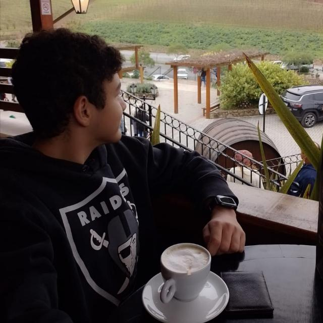

Quem Sou Eu?
Sou Guilherme Silva Domingues, um estudante apaixonado por tecnologia e desenvolvimento de sistemas. Atualmente, estou cursando o 2º ano do Ensino Médio integrado ao Técnico, mergulhando de cabeça no mundo da programação e me aventurando entre códigos e linhas de comando.
Minha Jornada no Desenvolvimento
Estou aprendendo com o lendário Gustavo Guanabara (você também é fã, né?) e acompanhando seus cursos incríveis de HTML e CSS. Com suas aulas descontraídas e cheias de piadas, fica muito mais fácil transformar aprendizado em diversão!
Além disso, para colocar a teoria em prática, decidi criar meu próprio site. É o meu laboratório digital, onde testo tudo o que aprendo, erro, conserto e, claro, melhoro a cada dia.

Por Que Desenvolvimento de Sistemas?
Desde cedo, tecnologia sempre chamou minha atenção. Adoro entender como as coisas funcionam "por baixo do capô" e, agora, estou dando meus primeiros passos para me tornar um desenvolvedor de verdade. Meu objetivo é construir projetos incríveis e, quem sabe, criar algo que mude o mundo (ou pelo menos o meu quarto, por enquanto).
Próximos Passos
Por enquanto, o foco é aprimorar minhas habilidades em HTML e CSS, mas não vou parar por aí! Meu plano é explorar o fascinante universo do JavaScript, aprender a dar vida ao meu site e, quem sabe, dominar outras tecnologias como Python, PHP, ou até mesmo criar aplicativos.